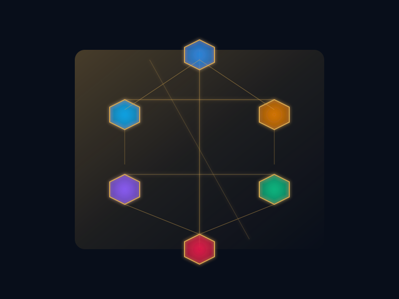

144 000 b/j.
1,5 Gbl de réserves
2P.
Exploration et production sur cinq bassins — Doba, Bongor, Doseo, Salamat, Termit. Sismique 2D/3D, forage directionnel et EOR actif sur champs matures.
Sismique 2D/3D sur 5 bassins.
Acquisition sismique, classement des prospects et évaluation des bassins — des plays matures Doba–Bongor aux rifts frontaliers de Salamat et Termit.
Acquisition Sismique
Campagnes 2D de reconnaissance et 3D haute densité couvrant 12 000+ km² sur les bassins de Doba, Bongor, Salamat et Erdis. Sources Vibroseis et dynamite adaptées au terrain sahélien.
Interprétation Géologique
Interprétation structurale et stratigraphique, cartographie d'horizons, analyse de failles. Intégration des diagraphies, carottes et biostratigraphie pour l'évaluation des prospects.
Classement & Analyse de Risques
Évaluation volumétrique probabiliste (P10/P50/P90), cartographie des probabilités géologiques de succès et classement du portefeuille pour prioriser les candidats au forage.
4 500 m MD. 18 % plus rapide que la moyenne du bassin.
Ingénierie puits, forage directionnel MWD/LWD, complétion, tests et mise en service — benchmarkés par rapport aux puits voisins sur les bassins en rift de Doba, Bongor et Doseo.
Ingénierie Puits & Forage Directionnel
Conception des tubages, ingénierie des boues, MWD/LWD, forage directionnel et horizontal jusqu'à 4 500 m MD. Trajectoires optimisées pour les réservoirs faillés de Doba et les structures en graben de Bongor.
Complétion & Tests de Puits
Contrôle du sable, perforation, gravel pack, complétion multi-zones. DST, PBU et diagraphies de production pour l'évaluation de la productivité et la caractérisation des réservoirs.
Workover & Intervention sur Puits
Coiled tubing, slickline, wireline, stimulation (acide/fracturation). Opérations d'abandon P&A selon les standards ITOPF et la réglementation tchadienne.
Performance Forage
Analyse en temps réel des données de forage, programme de réduction du NPT et benchmarking par rapport aux puits voisins. En moyenne 18 % plus rapide que la moyenne du bassin depuis la campagne 2026.
735 puits producteurs. 97,2 % de disponibilité.
Levage artificiel, EOR chimique, gestion de l'eau et installations de surface sur les champs de Doba et Bongor. Taux de récupération visé : 42 % via EOR, contre 35 % de base.
Capacité de Production Quotidienne & Portefeuille de Puits
Levage Artificiel
ESP, pompes à balancier, gas lift et PCP. Sélection du levage optimisée selon l'économie du puits, la pression réservoir et les propriétés des fluides.
EOR Chimique & Sourcing Local
Injection ASP (Alcalin-Surfactant-Polymère) utilisant les ressources locales tchadiennes : natron du Borkou comme agent alcalin, biosurfactants dérivés du neem/karité, polymères cellulosiques de coton. Cible +8-17 % OOIP de récupération incrémentale sur les réservoirs matures de Doba et 20-25 % sur le brut lourd de Bongor via des pilotes thermiques CSS.
Gestion de l'Eau
Traitement des eaux de production, systèmes de réinjection et programme Water-to-Value™ convertissant l'excédent d'eau en alimentation pour l'irrigation communautaire.
1,5 Gbl 1P. 2,8 Gbl 2P. 4,2 Gbl 3P.
Indice de vie des réserves de 28 ans au rythme actuel, prolongé à 38+ ans avec l'EOR. Doba concentre 68 % des réserves 2P ; Bongor les 32 % restants.
Classification des Réserves & Perspectives Stratégiques
milliards de barils équivalent pétrole
Confiance élevée, champs en productionmilliards de barils équivalent pétrole
Susceptibles d'être récupérées (upside 1P + 2P)milliards de barils équivalent pétrole
Soumis à approbation technique, fiscale & politiqueans de production aux taux actuels
Avec EOR : indice de vie étendu à 38+ ans par récupération incrémentale de 0,6-0,8 Gbbl
Upside exploration : ressources 3P incluent 1,4 Gbbl des prospects frontaliers Doseo, Salamat & Lac Tchad.
Distribution des Réserves par Bassin
Injection ASP issue de 5 ressources tchadiennes.
Natron (Borkou, lac Tchad), gomme arabique, cellulose de coton, biosurfactants de neem, spiruline — matières premières pour une chimie EOR sourcée localement. Objectif 6-17 % OOIP de récupération tertiaire sur les grès de Doba.
Natron — Agent Alcalin EOR
Le natron du lac Tchad et du Borkou (Na₂CO₃·NaHCO₃·2H₂O) comme agent alcalin miné localement pour l'injection ASP, remplaçant le carbonate de sodium importé. Atteint 6-17 % OOIP de récupération tertiaire dans les réservoirs gréseux. L'effet tampon réduit la tension interfaciale avec moins de dommage aux roches que le NaOH.
Gomme Arabique — Biopolymère EOR
Le Tchad produit 42 000+ tonnes/an de gomme arabique (2ᵉ mondial). Base polysaccharide complexe pour des biopolymères type gomme xanthane offrant une stabilité supérieure dans les réservoirs haute salinité/haute température où le HPAM synthétique échoue. Soutient 500 000+ ménages ruraux.
Cellulose de Coton — Précurseur Polymère
La production cotonnière tchadienne (150 000-180 000 t/an, 250 000 ha, 2,5 M travailleurs) fournit des fibres de cellulose pure à 94 %. Le coton de faible qualité se convertit en polymères EOR cellulosiques (CMC, HEC) pour le contrôle de viscosité dans l'injection de polymères, remplaçant le polyacrylamide pétrosourcé.
Neem & Karité — Biosurfactants
L'huile de graines de neem et le beurre de karité comme matière première pour la production de surfactants biodégradables. Réduit la tension interfaciale de 1 000 fois pour la mobilisation de l'huile. Combinés avec le natron alcalin en formulations ASP, les biosurfactants locaux atteignent 27 %+ de taux de récupération ROIP.
Spiruline — EOR Microbien
La spiruline du lac Tchad (250+ tonnes sèches/an, producteur au coût le plus bas au monde) contient des cyanobactéries capables de synthèse de biosurfactants. Voie pilote EOR microbienne (MEOR) pour la génération in-situ de surfactants dans les puits matures de Doba à une fraction du coût des produits chimiques synthétiques.
EOR Thermique — Brut Lourd Bongor
Pilotes CSS (Stimulation Cyclique par Vapeur) et SAGD pour le brut lourd du Bassin de Bongor (17-22° API). Injection de vapeur à 300-340 °C réduit la viscosité de 50 %+ par incrément de 10 °C. Facteurs de récupération 20-50 % vs. 5-10 % primaire. Le gaz des sous-produits de la raffinerie de Djermaya alimente la génération de vapeur.
Feuille de Route — Chaîne de Valeur EOR Locale
Sourcing industriel du natron (Borkou/Lac Tchad), pilote ASP sur 3 puits Doba, étude de faisabilité CSS brut lourd Bongor
Usine polymère cellulose coton, laboratoire biosurfactant neem/karité, screening MEOR spiruline, pilote EOR thermique Bongor
Déploiement ASP complet sur 50+ puits Doba, SAGD commercial Bongor, unité fabrication chimique EOR raffinerie Djermaya, objectif sourcing 100 % local
H₂O₂ et technologies de récupération avancée — 35 % → 48 % d'ici 2032.
Déploiement séquencé waterflood optimisé, ASP, CCUS, stimulations H₂O₂ et intelligent completions sur Doba, Bongor, Doseo, Salamat et Termit — 195 Mbbl incrémentaux, VAN10 de 5,2 Md USD.
H₂O₂ — oxydant propre pour puits mâtures
Génération in-situ de radicaux •OH. Traitement des paraffines, asphaltènes, H₂S, biofilms et scale. Matrix oxidation et hybridation thermique vapeur pour brut lourd.
Intelligent completions & digital twin
ICV, AICD, fibres optiques DTS/DAS, mandrel d'injection chimique downhole. Digital twin CMG-STARS couplé au SCADA temps réel. IA prédictive pour water breakthrough et optimisation ESP.
CCUS & CO₂ EOR — double levier
Injection CO₂ miscible sur Bolobo profond. Double levier climat et récupération : séquestration des émissions Djermaya, gain 7-15 pts récupération. Conformité ITIE et GRI 305.
Jalons 2026-2030
Exécution séquencée — piloter avant de déployer
Pack technique — Programme Champs Mâtures
Note technique complète (18 p.), synthèse exécutive (4 p.) et deck CODIR (12 slides) — référence ETG-NT-AMONT-2026-004.
5 bassins. 700 000 km². 144K b/j nets.
Bassins producteurs — Doba (50K b/j, 8 champs), Bongor (18K b/j, 4 champs) — ancrent un portefeuille étendu à Doseo, Salamat, Termit et deux blocs sahariens frontaliers.
Portefeuille de Bassins & Statut
Bassin de Doba
ProductionSuperficie : 200 000 km²
Champs : 8 en production (Komé, Bolobo, Miandoum, Badila, Mangara, Krim, etc.)
Réservoir : grès du Miocène, 1 200-1 800 m de profondeur
Opérateurs : Esso/Petronas (original), Perenco (Badila/Mangara/Krim)
Production : 50 000 bbl/j
Bassin de Bongor
Production / DéveloppementSuperficie : 16 000 km²
Champs : 4 en production (Ronier, Mimosa, Koudalwa, Gom-Gom)
Réservoir : Crétacé (brut lourd 17-22° API)
Opérateurs : CNPC, SHT (raffinerie Djermaya 20K bbl/j)
Production : 18 000 bbl/j
Bassin de Doseo
ExplorationSuperficie : 28 000 km²
Statut : exploration précoce, 2 blocs actifs
Prospect clé : découverte Bloc H (2024)
Contingent estimé : 0,8-1,2 Gbbl
Phase : sismique 3D, maturation des prospects
Bassin de Salamat
FrontierSuperficie : 45 000 km²
Statut : phase exploration frontier
Infrastructure : couverture sismique limitée
Potentiel : jeux du Paléozoïque et du Mésozoïque
Phase : sismique 2D de reconnaissance
Bassin du Lac Tchad
Phase d'ÉtudeSuperficie : 180 000 km² (régional)
Statut : penché au gaz, pré-exploration
Caractéristique clé : syn-rift crétacé
Marchés gaz potentiels : région CEMAC
Phase : études géochimiques & structurales
Bassin de l'Erdis
Frontier ÉloignéSuperficie : 62 000 km² (secteur tchadien)
Statut : exploration frontier éloignée
Géographie : terrain saharien extrême
Systèmes pétroliers régionaux : trans-sahariens
Phase : évaluation stratégique, recherche de partenaires
Bassin de Doba
Logone OrientalBassin de production phare du Tchad depuis 2003. Six clusters majeurs — Komé, Bolobo, Miandoum (consortium Esso originel) plus Badila, Mangara et Krim (opérés par Perenco, 18 000+ bbl/j). Réservoirs gréseux crétacés prouvés à 1 200–1 800 m de profondeur. 200+ puits producteurs, connectés au pipeline d'export Doba-Kribi de 1 070 km via COTCO.
Bassin de Bongor
Mayo-Kebbi EstPlay d'huile lourde émergent dans le graben de Bongor. Les champs Ronier, Mimosa et Koudalwa produisent 18 000 bbl/j de brut 17-22° API. Connecté à la raffinerie de Djermaya (capacité 20 000 bbl/j) via le pipeline Ronier-Djermaya de 300 km mis en service en 2011. Pilotes EOR thermiques en cours pour débloquer les réserves visqueuses.
Exploration Active & Découvertes Récentes
Un programme d'exploration systématique sur 12 blocs actifs avec 22 700 km de données sismiques, produisant des découvertes récentes dans les bassins de Bongor et Doseo avec un potentiel commercial.
Acquisition Sismique & Activité d'Exploration
Découvertes Récentes
Bongor Sud-Est
Puits découverte : BSE-1 (2025)Accumulation de brut lourd (22-24° API) dans la section crétacée. Taux de production initial : test de flux 800 bbl/j. Ressources conditionnelles : 180-250 Mbbl (estimation P50).
Doseo Bloc H
Puits découverte : DBH-1 (2024)Brut doux léger (32° API) dans un grès du Miocène. Piège structurel avec 200+ m de clôture. Taux de production initial : 1 200 bbl/j. Ressources conditionnelles : 250-400 Mbbl (P50).
Programmes d'Exploration
Programme Bassin Doseo
Programme sismique 3D systématique couvrant 1 200 km² pour mûrir des prospects supplémentaires au-delà de la découverte DBH. 2-3 puits d'évaluation/exploration prévus 2025-2027.
Reconnaissance Salamat
Reconnaissance sismique 2D régionale (3 500+ km) pour cartographier l'architecture des bassins et définir les prospects d'étapes précoces. Potentiel des jeux du Paléozoïque et du Mésozoïque.
Potentiel Gaz Lac Tchad
Analyse géochimique et cartographie structurale pour évaluer le potentiel gazéifère dans la section syn-rift crétacée. Demande régionale de gaz naturel des centrales électriques CEMAC.
Du Puits de Production à la Raffinerie
Notre production amont alimente la chaîne de valeur nationale de raffinage et de pétrochimie du Tchad — du traitement du brut à Djermaya à la distribution de produits raffinés dans la zone CEMAC.
Alimentation Raffinerie Djermaya
Le brut du Bassin de Bongor (champs Ronier, Mimosa, Koudalwa) alimente la raffinerie de Djermaya de 20 000 bbl/j via un pipeline dédié de 300 km. Mise en service en 2011, joint-venture CNPC 60 % / SHT 40 %. Production d'essence, gasoil, kérosène, GPL, fuel lourd et Jet A1.
Transformation Pétrochimique
La raffinerie de Djermaya intègre une conversion pétrochimique de base produisant 25 000 tonnes/an de polypropylène à partir des flux de raffinage. Production annuelle raffinée : 240 M litres d'essence, 300 M litres de gasoil, 60 000 tonnes de GPL et 40 000 tonnes de fuel lourd.
Stratégie Export & Croissance
85–90 % des 144 000 bbl/j de production brute nationale exportés via le pipeline Doba-Kribi de 1 070 km (COTCO). Le plan Tchad Connexion 2030 vise 250 000 bbl/j avec l'expansion Phase II de la raffinerie à 2,5 Mt/an de capacité.
Intelligence du Sous-Sol
Caractérisation avancée des réservoirs, simulation dynamique et gestion numérique des champs pour une récupération optimisée de notre portefeuille d'actifs.
Modélisation Statique & Dynamique
Modélisation géostatistique (Petrel/SKUA-GOCAD), simulation Eclipse/CMG calée sur l'historique. 15+ modèles de réservoir maintenus et mis à jour trimestriellement.
Jumeau Numérique & IA Prédictive
Jumeau numérique en temps réel intégrant SCADA, tests de puits et données de production. Modèles ML prédisant les percées d'eau, défaillances d'ESP et emplacements d'infill.
Analyse PVT & Carottes
Laboratoire PVT interne pour la caractérisation des fluides, mesures SCAL et screening EOR. Analyses spéciales de carottes pour la mouillabilité, la perméabilité relative et la pression capillaire.
Technologie & Innovation pour une Production Durable
Capacités avancées de champ numérique, optimisation pilotée par l'IA, pilotes de capture du carbone et intégration des énergies renouvelables alimentant la feuille de route de la transition énergétique d'EnerTchad.
Programmes Pilotes EOR
Pilotes actifs pour injection ASP (Alcalin-Surfactant-Polymère) sur les grès de Doba visant une augmentation de 10-15 % de la récupération. Évaluation CSS (Stimulation Cyclique par Vapeur) sur le brut lourd de Bongor. Étude de faisabilité EOR microbienne (MEOR) exploitant la spiruline du Lac Tchad.
Champ Numérique & SCADA
Intégration SCADA en temps réel sur 735 puits producteurs avec arrêts automatisés, surveillance pression/température et prévisions de production. Les capteurs IoT sur équipement critique réduisent les temps d'arrêt de 18 %. Système PI basé sur le cloud permet aux équipes opérationnelles distribuées.
Modélisation Réservoir Pilotée par IA
Les modèles d'apprentissage automatique prédisent le calendrier de percée d'eau, le risque de défaillance d'ESP et les emplacements optimaux de forage d'infill 6-12 mois à l'avance. Les réseaux de neurones optimisent les complétions de puits économisant 12 % des coûts de forage. Twin numérique mis à jour trimestriellement à partir des tests de puits.
Programme Pilote CCUS
Pilote de capture et utilisation du carbone pour EOR-CO₂ (Injection Miscible) sur deux puits de Doba visant 15 000 tCO₂/an. Le CO₂ capturé du traitement des gaz de la raffinerie Djermaya alimente le pilote. Étude de faisabilité du stockage géologique permanent en cours.
Énergie Solaire & Gaz Hybride
Énergie solaire-gaz hybride aux installations Doba : réseau solaire 5 MW fournit 40 % de la puissance de production maximale pendant le jour, avec écrêtage des pics du turbocompresseur à gaz. Réduit la consommation de carburant de 18 % et le brûlage de 22 %. Plans d'expansion à 15 MW dans tous les champs d'ici 2028.
LDAR & Réduction des Émissions
Programme LDAR (Détection et Réparation de Fuites) utilisant la thermographie FLIR et capteurs de gaz montés sur drones. Élimine 92 % des émissions fugitives de l'équipement de surface. Intensité du méthane : 4,2 kg CO₂-eq/bbl (moyenne industrie : 8,5). Réduction du brûlage par accords de vente de gaz.
Calculateur de Réserves
Estimateur interactif STOIIP et réserves récupérables. Ajustez les paramètres réservoir pour modéliser les prospects dans les bassins du Tchad.
HSE, logistique, formation, gestion de flotte, cybersécurité et autres services support sont gérés au niveau du groupe.
Voir tous les services Groupe →